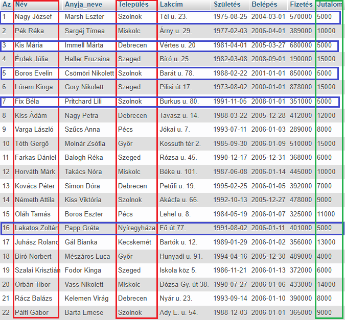
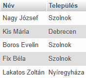
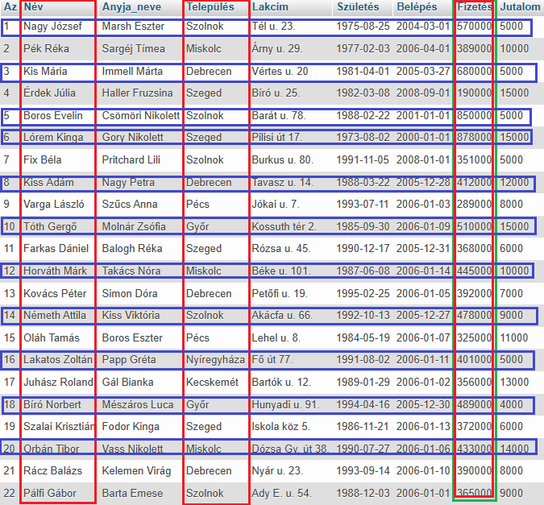
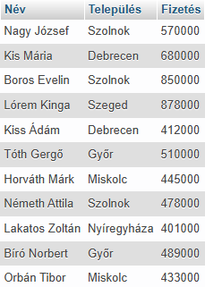

A WHERE utasítás sorok (rekord) szűrésére szolgál.
A WHERE utasítást arra használjuk, hogy csak azokat a sorokat (rekord) nyerjük ki, amelyek megfelelnek egy adott feltételnek.
A visszaadott adatokat egy eredménytáblában, az úgynevezett eredményhalmazban tárolja a rendszer.
SELECT Név, Település
FROM dolgozók
WHERE Jutalom = 5000;


Látható, hogy az eredménytábla a kiválasztott mezőkből áll.
Míg a SELECT az oszlopokra (mező), addig a WHERE az oszlopkra szűr. A kettő metszete adja vissza a eredménytáblát.
A Jutalom oszlopban (mező) keresi a szűrő feltételnek megfelelő értékeket!
SELECT Név, Település,
Fizetés
FROM dolgozók
WHERE Fizetés > 400000;


Látható, hogy az eredménytábla a kiválasztott mezőkből áll.
Míg a SELECT az oszlopokra (mező), addig a WHERE az oszlopkra szűr. A kettő metszete adja vissza a eredménytáblát.
A Fizetés oszlopban (mező) keresi a szűrő feltételnek megfelelő értékeket!